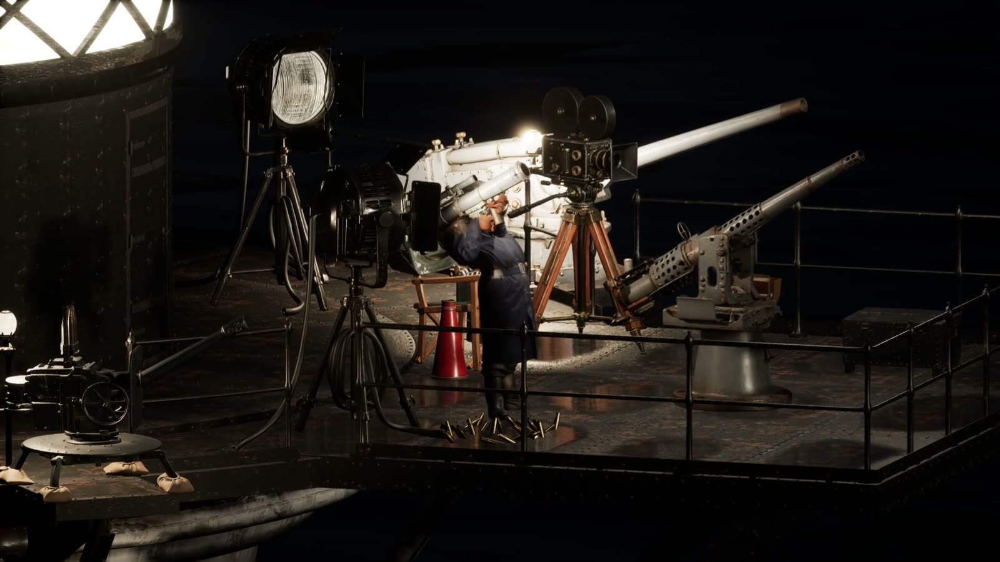
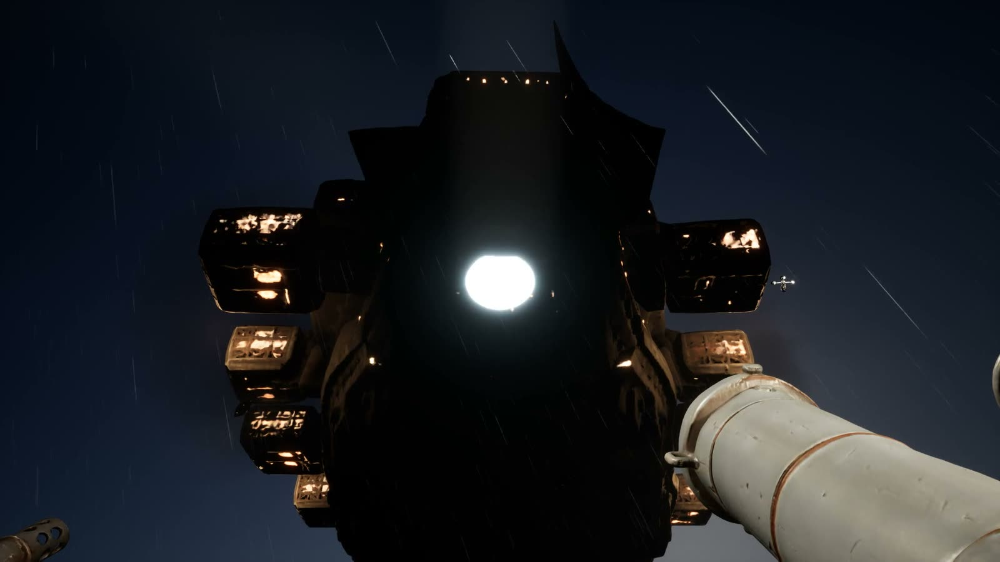
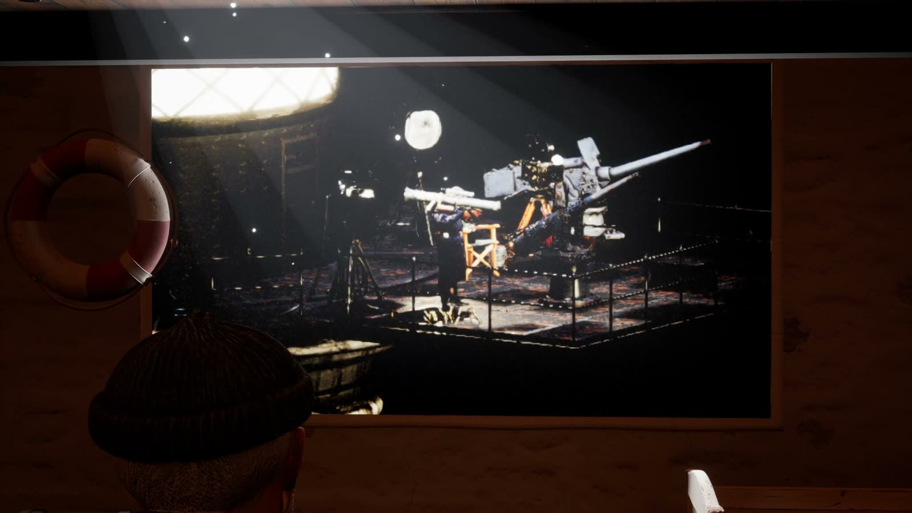
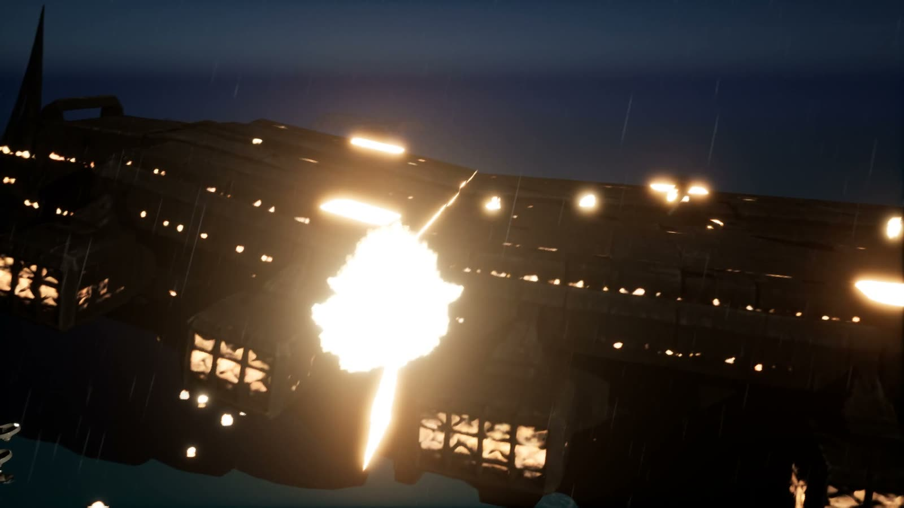
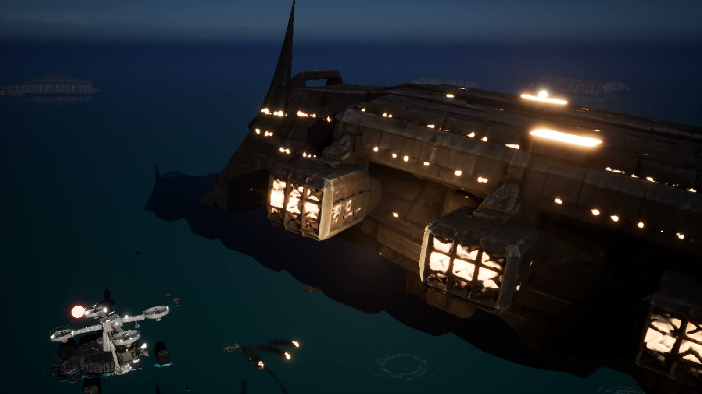

Day 4 Sunday 15 November
All times in this log are Danish time (CET, UTC+1): 6 hours ahead of New York, 9 hours ahead of Los Angeles. Point at a time to see it in your own.
The fourth night's finale in the developer's order, and a voice you can hear
5 pictures 4 min read
Checkpoint The developer's last playtest before the hand-in
This entry covers Sunday evening, from about 18:40 to 19:30.
The developer played the finished package on Easy, through the fourth night and its mothership. Three things were wrong.
The finale was the short version. The game counted motherships across every game ever played, not per game. He had brought one down in an earlier game, so in this one the boss's end played its short version, with no film and no ending.
The voice was hard to hear. The spoken lines were mixed at the level of a single explosion, so a fight buried them.
The drone seemed to have no camera. Its model does carry a film camera on a gimbal under its body (the Rodin model, made on the first day). But the camera is black, the night is dark, and in the last shot the drone was seen from straight behind.
He described the order the finale should have:
- When the mothership is nearly dead, the camera drone appears and flies out beside it to film the keeper.
- At the very end, the keeper raises the rocket launcher in first person and fires.
- The camera rides with the rocket and sees the hit from beside the ship. Both of these shots were kept as they were.
- "NIGHT 4 HELD".
- Only then the walk home, the projector, the chair, and the drone's film of the kill on the wall.
Two cameras at once
The kill now plays through the keeper's own eyes. He looks up at the ship, with the drone hanging to its right, the launcher comes up onto his shoulder, and he fires. Then comes the ride with the rocket and the hit, seen from beside the ship.
At the same moment the drone's own camera, which is never on screen, films him from out over the sea, from the place the gameplay video's side view was shot from. The keeper's full body and the launcher in his hands are drawn only for that camera. The launcher on the player's own shoulder is drawn only for the player. The rocket leaves from the tube in his hands, so on the film it comes out of the right launcher, and to the player it comes from beside his eye.


Before Before: the drone's view filled the screen


After After: through his eyes; the drone films him meanwhile
The film waits in memory while the rest of the night is fought. When the night is held, the result card shows first. Then the picture goes dark, the keeper walks home, and the drone's film of him plays on the wall.


The ending now comes once in every new game. Before, it came once ever.
The drone is seen going out
The drone now leaves the lantern when the ship's core is under a tenth, and it flies out faster than before. With the great lens the last tenth of the core can burn away in under a second. The first recording showed the drone leaving only 0.8 seconds before the kill, so the player never saw it go. Now a finished ship hangs at its last sliver until the drone is in place, for three and a half seconds at most, while the drone flies out past the gallery.
Its first waiting place, 300 metres off the hull toward the rock, was out of the keeper's view. It now waits a third of the way out, off to the right of the line from the gallery to the ship, so from the gallery it hangs to the right of the ship. Until the hit, its camera faces the keeper.
To make its camera read at night, the drone carries a soft light. In the last shot it hangs in the lower left of the frame, turned so that its side shows: the film camera, its two reels and its lens. In the first recording that place was wrongly worked out and the drone hung just outside the frame.
The same recording showed the picture going white for a second as he fired. The rocket's smoke trail is thickened so that the drone's camera, 200 metres away, sees it as a line across the sea. That trail started at the muzzle, beside his eye, with the motor's light inside it. In first person the trail now starts once the rocket is 15 metres clear of his eye. The launcher's back-blast was also moved to start behind his head.


Before First recording: the drone was placed just outside the frame


After Now: in the frame, lit, its camera showing
The voice
The spoken lines are now about four decibels louder. The Voice volume setting now applies to them (until now it only affected the ending). While a line plays, the music, the storm and the battle step back by half and come up again over two seconds. The keeper's lines in the ending were raised the same way.
The gameplay video
The gameplay video was recorded before this change. Its long shot of the keeper firing from the gallery is the drone's view, the same view its film now shows on the wall in the hut.